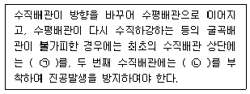
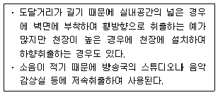
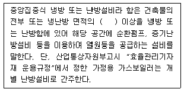
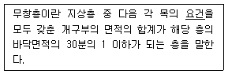
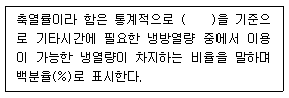
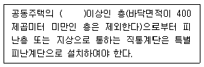

건축설비산업기사 (2014-05-25 기출문제)
1과목: 건축일반
1. 공동주택의 평면형식 중 편복도형에 대한 설명으로 맞지 않은 것은 무엇인가?
- 계단실형에 비해 통행부 면적이 작아서 건물의 이용도가 높다.
- 각호의 통풍 및 채광이 양호하다.
- 공용복도에 있어서는 프라이버시가 침해되기 쉽다.
- 고층에서는 개방형 복도에 안정감을 갖도록 설계하여야 한다.
(정답률: 80%)

2. 사무소 건축의 최상층을 2중 천장으로 하는 이유 중 가장 중요한 것은?
- 단열과 옥상 슬래브의 경사 확보
- 최상층으로의 직사일광 유입 차단
- 외부공간으로부터의 소음 차단
- 최상층에서의 외부 조망 확보
(정답률: 86%)
3. 철골구조에서 웨브 플레이트의 두께가 춤에 비해 작을 경우 작용하는 하중에 의해 좌굴이 발생하는데 이러한 좌굴방지를 위하여 설치하는 부재를 무엇이라하는가?
- 플랜지(Flange)
- 스티프너(Stiffener)
- 쉐어커넥터(Shear Connector)
- 플레이트 거더(Plate Girder)
(정답률: 84%)
4. 상점의 진열장 배치와 고객동선이 굴절 곡선으로 대면판매와 측면판매의 조합에 의해서 이루어진다. 이것은 주로 양품코너, 모자코너, 안경코너, 문방구코너 등에서 사용되는데 이것을 무엇이라 하는가?
- 직렬배열형
- 환상배열형
- 굴절배열형
- 복합형
(정답률: 75%)
5. 학교 운영방식 중 종합교실형(U형)에 대한 설명이 아닌 것은?
- 초등학교 고학년에 가장 권장할 만한 형식이다.
- 교실수와 학급수는 일치한다.
- 학급의 이동이 전혀 없고 가정적이다.
- 각 학급은 각 교실내에서 모든 교과를 행한다.
(정답률: 88%)
6. 주택의 거실을 계획할 경우에 고려해야 할 사항 중 맞지 않은 것은?
- 정원이나 원경을 전망하기 좋으며 안정된 분위기를 느낄 수 있는 실내구성이 되도록 한다.
- 거실이 통로가 되도록 배치시키는 것이 동성배치 상 합리적이다.
- 일반적으로 넓이는 1인당 최소한 4~6m2 정도가 적당하다.
- 거실의 한쪽 벽면만 다른 실과 접속시키고 나머지 3면을 확보하면 우수한 거실이 될 수 있다.
(정답률: 83%)
7. 학교건축에 대한 설명 중 맞지 않은 것은 무엇인가?
- 주차장의 배치는 학교 깊숙이 끌어들이지 않아야 한다.
- 초등학교에서 출입구를 고학년과 저학년으로 분리하지 않아야 한다.
- 관리부분의 배치는 학생들의 동선을 피하고 중앙에 가까운 위치가 좋다.
- 초등학교의 교사는 대지조건과 경제조건이 허용하는 한 저층화하여야 한다.
(정답률: 80%)
8. 보강 콘크리트 블록조에 대한 설명 중 맞지 않는 것은 무엇인가?
- 철근은 가는 것은 여러 개 쓰는 것보다 굵은 것을 적게 쓰는 것이 좋다.
- 내력벽은 통줄눈으로 쌓는다.
- 내력벽의 두께는 15cm 이상으로 한다.
- 벽 상부에는 테두리보를 설치한다.
(정답률: 79%)
9. 사무소 건축의 기준층 높이를 좌우하는 조건에 영향을 미치지 않는 것은?
- 에어 컨디셔닝
- 사무소의 안 깊이
- 엘리베이터의 대수
- 건물의 높이제한과 층수
(정답률: 87%)
10. 상점의 판매형식 중 대면판매에 대한 설명이 아닌 것은?
- 상품에 대한 설명을 하기에 편하다.
- 판매원이 정위치를 정하기가 용이하다.
- 진열면적이 감소된다.
- 상품의 충동적 구매와 선택이 용이하다.
(정답률: 80%)
11. 창호의 종류에 따른 기호 표시로 맞지 않는 것은?
- 강철제 장 :

- 목제 문 :

- 강철제 셔터 :

- 알루미늄합금제 창 :

(정답률: 87%)
12. 벽돌벽면에 발생하는 균열의 원인에 가장 영향이 적은 것은?
- 기초의 부동침하
- 내력벽의 불균형 배치
- 벽돌 및 모르타르의 강도 부족
- 과다한 벽량
(정답률: 76%)
13. 호텔의 각 부분을 기능적으로 분류할 때 맞지 않는 것은?
- 설비부분
- 숙박부분
- 공용, 사교부분
- 관리부분
(정답률: 86%)
14. 조적구조의 벽돌벽에 장식적으로 구멍을 내어 쌓는 방식은?
- 엇모쌓기
- 영롱쌓기
- 공간쌓기
- 마구리쌓기
(정답률: 87%)
15. 음식점 건축의 서비스 형식에 따른 종류의 연결이 맞는 것은?
- 테이블 서비스형(TABLE SERVICE) - 드라이브인 레스토랑
- 카운터 서비스형(COUNTER SERVICE) - 스낵바
- 셀프 서비스형(SELF SERVICE) - 중국요리 음식점
- 객실 서비스형(ROOM SERVICE) - 푸드코트
(정답률: 90%)
16. 다음 중 기초파기 공법에 해당되지 않는 것은?
- 웰 포인트 공법(Well-point method)
- 오픈 컷 공법(Open cut method)
- 트렌치 컷 공법(Trench cut method)
- 아일랜드 공법(Island method)
(정답률: 62%)
17. 공동주택의 단위주거 단면구성에 관한 설명 중 맞지 않은 것은 무엇인가?
- 플랫형(flat type)은 주거단위가 동일층에 한하여 구성되며, 각층에 통로나 엘리베이터를 설치한다.
- 스킵형(skip floor tyle)은 주거단위의 단면을 단층형과 복층형에서 동일층으로 하지 않는 형식이다.
- 메조넷형(maisonette type)은 통로를 상층과 하층에 배치하므로, 유효면적이 감소한다.
- 트리플렉스형(triplex type)은 하나의 주거단위가 3층형으로 구성되어 프라이버시 확보율이 높다.
(정답률: 81%)
18. 목재의 함수율이 일정할 때 섬유방향에 평행한 방향의 강도가 가장 큰 것은 무엇인가?
- 휨강도
- 전단강도
- 인장강도
- 압축강도
(정답률: 77%)
19. 철근콘크리트 단순보의 늑근 배근에 관한 설명이다. 맞는 것은?
- 보의 양단에 이를수록 많이 넣는다.
- 보의 중앙에 이를수록 많이 넣는다.
- 보에서 휨모멘트가 가장 큰 곳에 많이 넣는다.
- 보의 전단면에 항상 동일한 간격으로 배근한다.
(정답률: 71%)
20. 도서관 계획에 대한 설명으로 맞지 않는 것은 무엇인가?
- 모듈러 시스템을 도입한다.
- 폐가식 서고가 많은 보존목적의 대규모 도서관의 경우, 서고와 열람 · 사무부분이 일체구조로 구성되는 것이 유리하다.
- 도서관은 지역 사회의 중심으로 이용이 편리한 곳에 배치한다.
- 서고는 다소 어두운 곳이 보존상 유리하다.
(정답률: 71%)
2과목: 위생설비
21. 내경 50mm인 급수관에 물이 1.5m/ sec로 흐르고 있다. 유량은 얼마인가?
- 약 152 L/min
- 약 177 L/min
- 약 194 L/min
- 약 212 L/min
(정답률: 60%)
22. 가압송수장치에서 폐쇄형스프링클러헤드까지 배관 내에 항상 물이 가압되어 있다가 화재로 인한 열로 폐쇄형스프링클러헤드가 개방되면 배관 내에 유수가 발생하여 습식유수검지장치가 작동하게 되는 스프링클러설비를 무엇이라 하는가?
- 습식 스프링클러설비
- 건식 스프링클러설비
- 준비작동식 스프링클러설비
- 일제살수식 스프링클러설비
(정답률: 81%)
23. 사이펀 볼텍스식 대변기에 관한 설명으로 맞지 않은 것은 무엇인가?
- 탱크와 변기 일체형이다.
- 공기의 혼입이 많아 세정시 소음이 크다.
- 진공브레이커를 설치하여 역류를 방지하고 있다.
- 세정수의 와류 작용과 함께 사이펀 작용을 발생시켜 오물을 배출한다.
(정답률: 67%)
24. 중앙식 급탕방식 중 간접가열식에 관한 설명으로 맞지 않은 것은 무엇인가?
- 고압보일러를 설치하여야 한다.
- 직접가열식에 비해 열효율이 떨어진다.
- 저탕조내에 가열코일이 설치되어 있다.
- 가열 보일러는 난방용 보일러와 겸용할 수 있다.
(정답률: 67%)
25. 생물화학적 오수처리방법 중 생물막법에서 사용되는 접촉재가 갖추어야 할 조건이 아닌 것은?
- 점성이 클 것
- 비표면적이 클 것
- 생물막이 부착되기 쉬울 것
- 생물막에 의한 폐쇄가 어려울 것
(정답률: 81%)
26. 물의 경도에 관한 설명으로 맞지 않은 것은 무엇인가?
- 경도의 표시는 도(度) 또는 ppm이 사용된다.
- 일반적으로 지표수는 경수, 지하수는 연수로 간주한다.
- 연수는 쉽게 비누거품을 일으키지만, 음료용으로는 적합하지 않다.
- 물 속에 녹아있는 칼슘, 마그네슘 등의 염류의 양을 탄산칼슘의 농도로 환산하여 나타낸 것이다.
(정답률: 69%)
27. 위생기구에 관한 설명으로 맞지 않은 것은 무엇인가?
- 위생기구의 오버플로관은 기구트랩의 유출 측에 접속하여야 한다.
- 위생기구에는 배수관이나 이음쇠 등의 연결부에 청소용 소제구를 설치한다.
- 벽 또는 바닥에 접촉되는 위생기구의 접합부는 합성수지제 방수제로 막거나 방수처리를 한다.
- 오버플로 기능을 내장한 기구는 오버플로에서 넘친 물이 배수경로에 잔류하지 않는 구조로 한다.
(정답률: 67%)
28. 급수 배관에 관한 설명으로 맞지 않은 것은 무엇인가?
- 급수관과 배수관을 매설하는 경우, 급수관은 배수관 아래에 매설한다.
- 수평배관의 공기가 모일 수 있는 부분에는 공기빼기 밸브를 설치한다.
- 수평배관은 상향 급수배관 방식의 경우, 진행방향에 따라 올라가는 기울기로 한다.
- 수직배관에는 체크 밸브를 설치하여 유동 · 정지시의 역류에너지의 작용을 분산한다.
(정답률: 81%)
29. 배수설비에 관한 설명으로 맞는 것은 ?
- 배수계통은 원칙적으로 중력에 의해 옥외로 배출하도록 한다.
- 고온의 배수는 원칙적으로 60℃ 미만으로 냉각한 후 배수한다.
- 건물 내에서는 피트 내 배관은 피하고 가급적 지중배관으로 한다.
- 엘리베이터 샤프트에 배수 배관을 설치하는 것이 공간 활용상 바람직하다.
(정답률: 71%)
30. 유량이 18m3/h, 전양정이 50m인 펌프의 축동력은 얼마인가? (단, 펌프의 효율은 45%이다.)
- 2.4 kW
- 5.4 kW
- 7.8 kW
- 9.7 kW
(정답률: 61%)
31. 동관의 이음방법으로 맞지 않은 것은 무엇인가?
- 연납땜
- 플랜지이음
- 프레스이음
- 플래어이음
(정답률: 63%)
32. 통기관의 최소관경에 대한 설명 중 맞지 않은 것은 무엇인가?
- 통기관의 최소관경은 45mm로 한다.
- 신정통기관의 관경은 배수수직관의 관경보다 작게 해서는 안된다.
- 각개통기관의 관경은 그것이 접속되는 배수관 관경의 1/2 이상으로 한다.
- 결합통기관의 관경은 통기수직관과 배수수직관 중 작은 쪽 관경 이상으로 한다.
(정답률: 71%)
33. 배수입상관의 통기에 관한 설명으로 맞지 않은 것은 무엇인가?
- 5개 이상의 횡지관이 있는 배수입상관에는 통기입상관을 설치한다.
- 위생배관의 통기관은 위생배관 통기 이외 다른 목적으로 사용해서는 안된다.
- 여러 개의 통기관을 입상관 상부 끝에서 공동 헤더로 연결하여 한 곳에서 대기에 개방해서는 안된다.
- 10개 이상의 횡지관이 있는 배수입상관에는 입상관 상부에서 10개의 지관마다 도피통기관을 설치한다.
(정답률: 68%)
34. 옥내소화전설비를 설치하여야 하는 특정소방대상물에서 옥내소화전이 각 층마다 6개씩 설치되어 있다. 옥내소화전 설비의 수원의 저수량은 최소 확보수량은?
- 13m3
- 14m3
- 15.6m3
- 48m3
(정답률: 49%)
35. 급탕설비에 관한 설명으로 맞지 않은 것은 무엇인가?
- 배관은 적정한 압력손실 상태에서 피크시를 충족시킬 수 있어야 한다.
- 냉수, 온수를 혼합사용 해도 압력차에 의한 온도변화가 없도록 하여야 한다.
- 동시 사용율이 높은 건물은 가열기 능력을 작게 하고 저탕탱크를 크게 하여야 한다.
- 밀폐형 급탕시스템에는 온도상승에 의한 압력을 도피시킬 수 있는 팽창탱크 등의 장치를 설치한다.
(정답률: 80%)
36. 급수방식 중 고가탱크 방식에 관한 설명으로 맞는 것은?
- 급수압력이 일정하다.
- 대규모의 급수 수요에 대응이 불가능하다.
- 저수조가 없으므로 단수시에 급수할 수 없다.
- 위생성 및 유지 · 관리 측면에서 가장 바람직한 방식이다.
(정답률: 88%)
37. 급탕용 팽창탱크에 관한 설명으로 맞지 않은 것은 무엇인가?
- 개방식 팽창탱크는 급탕 보급탱크와 겸용할 수 없다.
- 온수의 가열팽창에 의한 과잉을 방지하기 위해 설치한다.
- 밀폐식 팽창탱크를 사용하는 경우, 안전밸브를 설치할 필요가 있다.
- 급수방식이 압력탱크방식이나 펌프직송방식의 중앙식 급탕설비의 경우에는 밀폐식 팽창탱크가 사용된다.
(정답률: 47%)
38. 다음의 배수 트랩 중 사이폰식 트랩으로 볼 수 있는 것은?
- U 트랩
- 벨 트랩
- 드럼 트랩
- 보틀 트랩
(정답률: 80%)
39. 도시가스는 압력에 따라 고압, 중압, 저압으로 구분할 수 있다. 고압의 기준은? (단, 게이지압력)
- 10kPa 이상
- 0.1 MPa이상
- 1MPa 이상
- 10MPa 이상
(정답률: 81%)
40. 다음의 급수 배관에 관한 설명 중 ( )안을 채우면?

- ㉠ 배수밸브, ㉡ 지수밸브
- ㉠ 공기빼기밸브, ㉡ 배수밸브
- ㉠ 배수밸브, ㉡ 진공방지밸브
- ㉠ 진공방지밸브, ㉡ 공기빼기밸브
(정답률: 77%)
3과목: 공기조화설비
41. 건구온도 30℃, 엔탈피 63kJ/kg인 습공기 3200m3/h를 바이패스팩터 0. 18인 냉각코일로 냉각감습하는 경우 냉각되는 전열량은 얼마인가? (단, 습공기의 밀도는 1.2kg/m3, 냉각코일의 표면온도는 10℃, 10℃ 포화습공기의 엔탈피는 29.4kJ/kg 이다.)
- 약 20.2 kW
- 약 29.4 kW
- 약 32.8 kW
- 약 38.4 kW
(정답률: 49%)
42. 증기코일의 배관법에 관한 설명으로 맞지 않은 것은 무엇인가?
- 각 코일에는 별개의 트랩을 설치한다.
- 응축수가 발생하는 곳에는 상향구배를 한다.
- 코일을 쉽게 뗴어 낼 수 있는 곳에 플랜지를 접속한다.
- 증기의 횡주관으로부터 지관의 분기는 횡주관의 윗부분에서 한다.
(정답률: 77%)
43. 공기여과기용 에어필터의 선정시 고려사항에 해당되지 않는 것은?
- 압력손실
- 필터의 중량
- 분진포집 효율
- 적용분진 입자경
(정답률: 84%)
44. 설계 외기조건을 선정하기 위한 위험률(TAC)에 관한 설명으로 맞지 않은 것은 무엇인가?
- 위험률을 크게 잡으면 장치용량도 커진다.
- 요구조건이 엄격한 건물일수록 위험률은 작게 한다.
- 위험률 5%는 위험률 2.5% 보다 설계외기 기준 온도를 벗어나는 시간이 2배이다.
- 위험률은 난방 또는 냉방기간의 총 시간에 대한 온도 출현 빈도분포로부터 구한다.
(정답률: 69%)
45. 수관보일러에 관한 설명으로 맞지 않은 것은 무엇인가?
- 연관식보다 설치면적이 넓다.
- 사용압력이 연관식보다 낮다.
- 예열시간이 짧고 효율이 좋다.
- 부하변동에 대한 추종성이 높다.
(정답률: 69%)
46. 공조용 감습장치 중 여름철 일반적으로 주택에서 사용하는 룸에어컨의 감습방법으로 맞는 것은?
- 냉각 감습
- 압축 감습
- 흡수식 감습
- 흡착식 감습
(정답률: 70%)
47. 다음과 같은 특징을 갖는 축류형 취출구는 무엇인가?

- 노즐형
- 웨이형
- 브리즈 라인형
- 아네모스탯형
(정답률: 81%)
48. 냉각탑에서 입구수온을 tw1, 출구수온을 tw2, 입구공기의 습구온도 t1, 출구공기의 습구온도 t2라 할 때 레인지(Range)란 무엇을 말하는가?
- tw1-t1
- tw1-t2
- tw2-t2
- tw1-tw2
(정답률: 71%)
49. 난방시 옆방과의 온도차가 5℃일 때 벽체면적 20m를 통해 이동되는 관류열량을 계산하면? (단, 벽체의 열관류율은 0.5W/m2‧K 이다.)
- 25W/m2
- 25W
- 50W/m2
- 50W
(정답률: 46%)
50. 배관회로 방식에 관한 설명으로 맞는 것은 무엇인가?
- 밀폐회로방식은 개방회로방식에 비해 배관부식이 심하다.
- 역환수방식에서는 밸브를 사용하여 유량을 균일하게 조절하는 방식이다.
- 직접환수식은 배관 스페이스가 적으나 유량의 균등한 배분이 어려운 방식이다.
- 건식환수방식은 보일러 기준수면보다 낮은 위치에 환수 주관을 설치하는 방식이다.
(정답률: 45%)
51. 공기조화방식 중 팬코일 유닛방식에 관한 설명으로 옳지 않은 것은 무엇인가?
- 각 실제 수배관으로 인한 누수의 우려가 있다.
- 팬코일 유닛 내에 있는 팬으로부터의 소음이 있다.
- 유닛을 창문 밑에 설치하면 콜드 드래프트(cold draft)를 줄일 수 있다.
- 개별제어가 불가능하므로 부하특성이 다른 여러 개의 실이나 존이 있는 건물에 적용하기가 곤란하다.
(정답률: 75%)
52. 고층 건물에서 외부의 압력과 실내의 압력이 동일한 위치는 어디인가? (단, 외부 풍속 v=0 m/s로 가정한다.)
- 최하층
- 중간층
- 최상층
- 모든 층
(정답률: 70%)
53. 덕트 설계시 고려사항에 포함되지 않는 것은?
- 덕트 소음
- 덕트로부터의 열손실
- 공기의 흐름에 대한 마찰 저항
- 덕트 내의 흐르는 공기의 습도
(정답률: 70%)
54. 공기조화 부하계산의 목적에 관한 설명으로 맞지 않은 것은 무엇인가?
- 실내의 부하상태를 알기 위해
- 건물의 위치와 방향에 따른 풍속을 구하기 위해
- 실내에 송풍하는 공기의 양과 송풍온도를 결정하기 위해
- 냉동기, 보일러, 냉수펌프, 온수펌프, 공기조화기 등 기기의 용량을 구하기 위해
(정답률: 79%)
55. 다음 중 스케일이 보일러에 미치는 영향과 관계없는 것은?
- 보일러의 전열면이 과열된다.
- 워터 햄머(water hammer)를 일으킨다.
- 열의 전달을 방해하여 보일러 효율을 저하시킨다.
- 보일러의 철판이나 관 등을 부식시키는 원인이 된다.
(정답률: 84%)
56. 실용적 6000m3, 재실자 450명인 강당이 있다. 실내 온도를 20℃로 하기 위한 필요 환기량은 얼마인가? (단, 환기온도 15℃, 재실자 1인당의 발열량 80W, 실의 손실열량 4000W, 공기의 밀도 1.2kg/m3, 공기의 정압비열 1.01kJ./kg·K 이다.)
- 19010m3/h
- 21642m3/h
- 25624m3/h
- 28422m3/h
(정답률: 41%)
57. 공기세정기의 분무수 온도 tw, 입구공기의 건구온도 t1, 습구온도 t1′, 노점온도 t1″일 때 상태변화에 관한 설명으로 맞지 않은 것은 무엇인가?
- tw＜t1″일 때 냉각감습
- tw＞t1일 때 가열가습
- tw=t1′일 때 열가습
- t1′＜tw＜t1일 때 가열가습
(정답률: 58%)
58. 보일러 주변배관에 하트포트 접속법을 사용하는 이유는 무엇인가?
- 보일러의 압력초과방지
- 보일러의 일정압력유지
- 보일러의 안전수면유지
- 보일러의 스케일 발생 방지
(정답률: 75%)
59. 다음 중 습공기 선도 상에서 나타나지 않는 것은?
- 비열
- 엔탈피
- 노점온도
- 수증기분압
(정답률: 54%)
60. 흡수식 냉동기에 관한 설명으로 맞지 않은 것은?
- 소음, 진동이 크다.
- 냉각탑 등 장치 용량이 크다.
- 증기 또는 고온수를 열원으로 하므로 사용전력량이 적다.
- 진공으로 운전되므로 고압가스 취급법의 적용을 받지 않는다.
(정답률: 76%)
4과목: 건축설비관계법규
61. 다음은 건축물의 에너지절약 설계기준에 따른 용어의 정의이다.( )안에 알맞은 것은?

- 40%
- 50%
- 60%
- 70%
(정답률: 83%)
62. 제연설비를 설치하여야 하는 특정소방대상물이 아닌 것은?
- 지하가(터널은 제외)로서 연면적이 1000m2인 것
- 문화 및 집회시설로서 무대부의 바닥면적이 300m2인 것
- 공항시설의 휴게시설로서 무창층의 바닥면적이 800m2인 것
- 지하층에 설치된 근린생활시설로서 해당 용도로 사용되는 바닥면적의 합계가 1200m2인 것
(정답률: 54%)
63. 다음 중 방염대상물품이 아닌 것은?
- 전시용 합판
- 암막-무대막
- 두께가 3mm인 벽지류
- 창문에 설치하는 커튼류
(정답률: 70%)
64. 상수도소화용수설비를 설치하여야 하는 특정소방대상물의 연면적 기준은 얼마인가?
- 1000m2 이상
- 3000m2 이상
- 5000m2 이상
- 10000m2이상
(정답률: 74%)
65. 건축법령에 따른 용어의 정의로 맞지 않은 것은?
- 준초고층 건축물이란 고층건축물 중 초고층 건축물이 아닌 것을 말한다.
- 건축이란 건축물을 신축-증축-개축-재축하거나 건축물을 이전하는 것을 말한다.
- 대수선이란 건축물의 노후화를 억제하거나 기능 향상 등을 위하여 일부 증축하는 행위를 말한다.
- 지하층이란 건축물의 바닥이 지표면 아래에 있는 층으로서 바닥에서 지표면까지 평균 높이가 해당 층 높이의 2분의 1이상인 것을 말한다.
(정답률: 78%)
66. 건축물의 거실에 국토교통부령으로 정하는 기준에 따라 배연설비를 하여야 하는 대상 건축물이 아닌 것은? (단, 6층 이상인 건축물로서 피난층이 아닌 경우)
- 종교시설
- 판매시설
- 의료시설
- 공동주택
(정답률: 68%)
67. 건축물에 설치하는 굴뚝의 옥상 돌출부는 지붕면으로부터의 수직거리를 최소 얼마 이상으로 하여야 하는가?
- 0.5m
- 1.0m
- 1.2m
- 1.5m
(정답률: 76%)
68. 문화 및 집회시설 중 공연장의 용도에 쓰이는 건축물의 관람석에 설치하는 반자의 높이는 최소 얼마 이상이어야 하는가? (단, 관람석의 바닥면적은 300m2이며, 기계환기장치를 설치하지 않는 경우)
- 2.1m
- 2.7m
- 3.5m
- 4m
(정답률: 67%)
69. 다음은 무창층에 관한 용어의 정의이다. 밑줄 친 요건에 해당하지 않는 것은?

- 내부 또는 외부에서 쉽게 파괴할 수 없을 것
- 도로 또는 차량이 진입할 수 있는 빈터를 향할 것
- 크기는 지름 50cm 이상의 원이 내접할 수 있는 크기일 것
- 해당 층의 바닥면으로부터 개구부 밑부분까지의 높이가 1.2m 이내일 것
(정답률: 81%)
70. 건축법령상 시-군-구에 두는 건축위원회의 심의 사항이 아닌 것은?
- 건축선의 지정에 관한 사항
- 층수가 16층인 건축물의 건축에 관한 사항
- 건축물의 건축등과 관련된 분쟁의 조정 또는 재정에 관한 사항
- 판매시설로서 해당 용도에 쓰는 바닥면적의 합계가 5000m2인 건축물의 건축에 관한 사항
(정답률: 73%)
71. 배연설비의 설치에 관한 기준 내용으로 맞지 않은 것은?
- 배연창의 유효면적은 1m2 이상이어야 한다.
- 배연구는 예비전원에 의하여 열 수 있도록 하여야 한다.
- 건축물에 방화구획이 설치된 경우에는 그 구획마다 최소 2개소 이상의 배연창을 설치하여야 한다.
- 배연구는 연기감지기 또는 열감지기에 의하여 자동으로 열 수 있는 구조로 하되, 손으로도 열고 닫을 수 있도록 하여야한다.
(정답률: 61%)
72. 비상용승강기의 승강장 및 승강로의 구조에 관한 기준 내용으로 맞지 않은 것은?
- 채광이 되는 창문이 있거나 예비전원에 의한 조명설비를 할 것
- 벽 및 반자가 실내에 접하는 부분의 마감재료는 불연재료로 할 것
- 승강장의 바닥면적은 비상용승강기 1대에 대하여 최소 5m2 이상으로 할 것
- 승강장은 각 층의 내부와 연결될 수 있도록 하되, 그 출입구(승강로의 출입구는 제외)에는 갑종방화문을 설치할 것
(정답률: 82%)
73. 소방시설 설치-유지 및 안전관리에 관한 법률에 따른 소방시설의 종류에 맞지 않는 것은?
- 소화설비
- 피난설비
- 경보설비
- 방화설비
(정답률: 65%)
74. 다음 중 6층 이상의 거실면적의 합계가 6000m2 인 경우, 설치하여야 하는 승용승강기의 최소 대수가 가장 많은 건축물의 용도는? (단, 8인승 승용승강기인 경우)
- 의료시설
- 공동주택
- 업무시설
- 문화 및 집회시설 중 전시장
(정답률: 80%)
75. 건축물을 건축하는 경우 국토교통부령으로 정하는 구조기준 등에 따라 그 구조의 안전을 확인하여야 하는 대상 건축물이 아닌 것은?
- 층수가 3층인 건축물
- 높이가 14m인 건축물
- 처마높이가 9m인 건축물
- 기둥과 기둥 사이의 거리가 9m 인 건축물
(정답률: 78%)
76. 건축물의 에너지절약 설계기준에 따른 건축부문의 권장사항으로 맞지 않은 것은 무엇인가?
- 공동주택은 인동간격을 넓게 하여 저층부의 일사 수열량을 증대시킨다.
- 태양열 유입에 의한 냉방부하 저감을 위하여 태양열 유입 유도장치를 설치한다.
- 건축물의 체적에 대한 외피면적의 비 또는 연면적에 대한 외피면적의 비는 가능한 작게 한다.
- 발코니 확장을 하는 공동주택이나 c창호면적이 큰 건물에는 단열성이 우수한 로이(Low-E) 복층창이나 삼중창 이상의 단열성능을 갖는 창호를 설치한다.
(정답률: 55%)
77. 다음은 건축물의 냉방설비에 대한 설치 및 설계기준에 따른 축열률의 정의는?

- 연중 최소냉방부하를 갖는 날
- 연중 최대냉방부하를 갖는 날
- 연중 최소냉방부하를 갖는 달
- 연중 최대냉방부하를 갖는 달
(정답률: 84%)
78. 다음은 피난계단의 설치에 관한 기준은?

- 6층
- 11층
- 16층
- 21층
(정답률: 53%)
79. 건축법령상 제 1종 근린생활시설이 아닌 것은?
- 치과의원
- 변전소
- 일반음식점
- 공중화장실
(정답률: 79%)
80. 비상조명등을 설치하여야 하는 특정소방대상물의 층수 및 연면적 기준을 나타내면?
- 지하층을 포함하는 층수가 5층 이상인 건축물로서 연면적 2000m2 이상인 것
- 지하층을 포함하는 층수가 5층 이상인 건축물로서 연면적 3000m2 이상인 것
- 지하층을 포함하는 층수가 3층 이상인 건축물로서 연면적 2000m2이상인 것
- 지하층을 포함하는 층수가 3층 이상인 건축물로서 연면적 3000m2 이상인 것
(정답률: 70%)